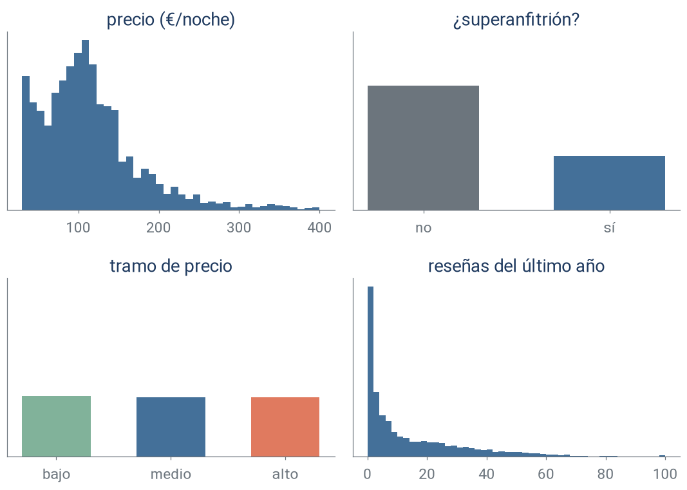
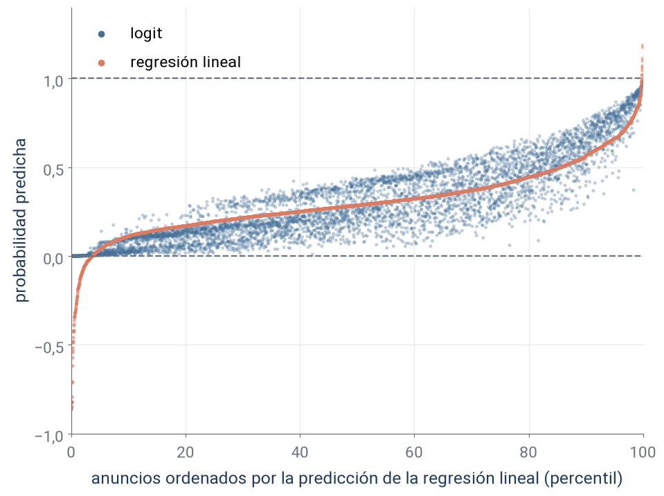
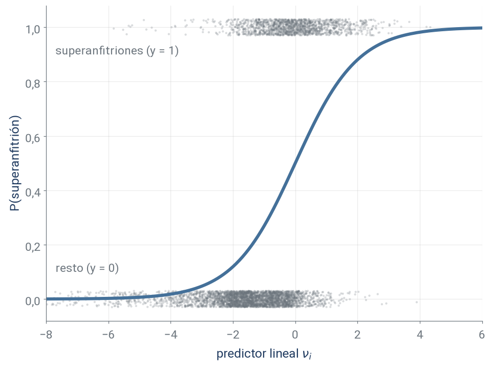
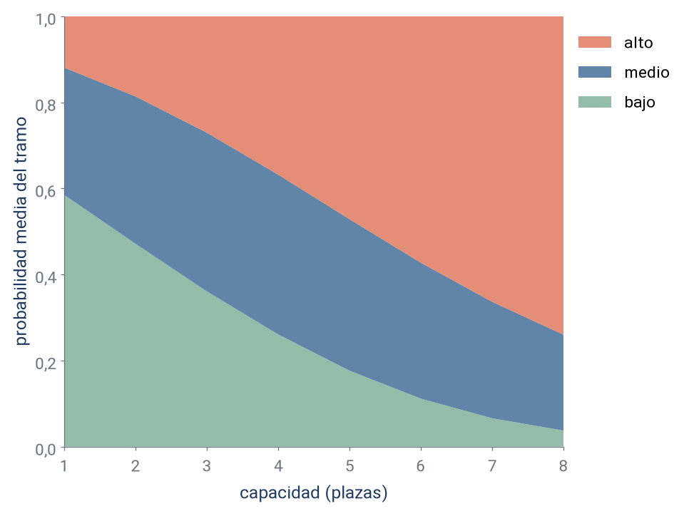
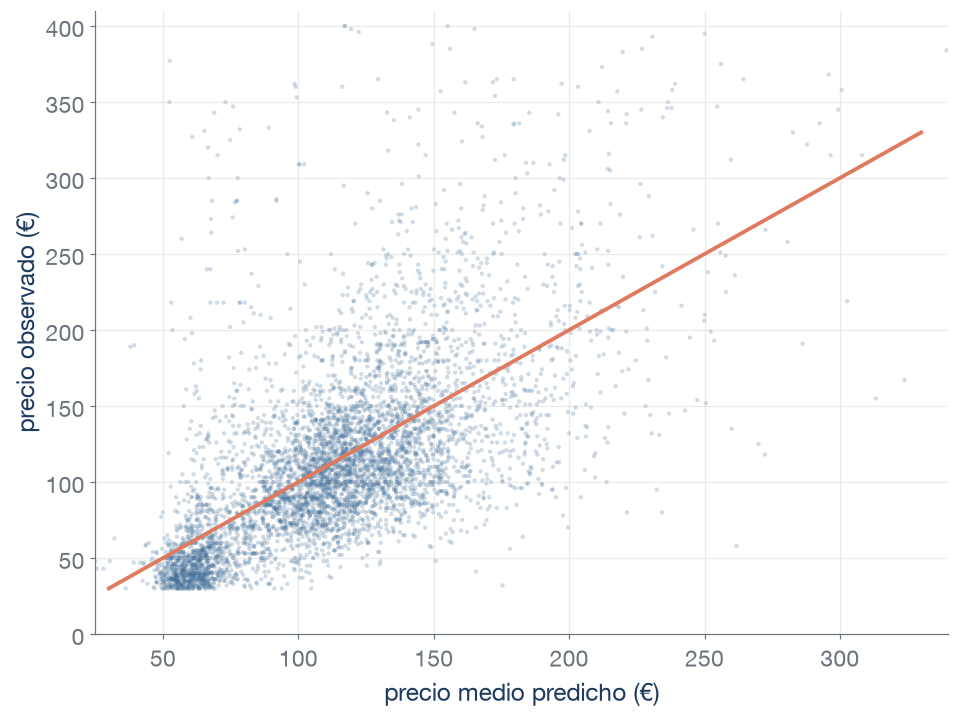
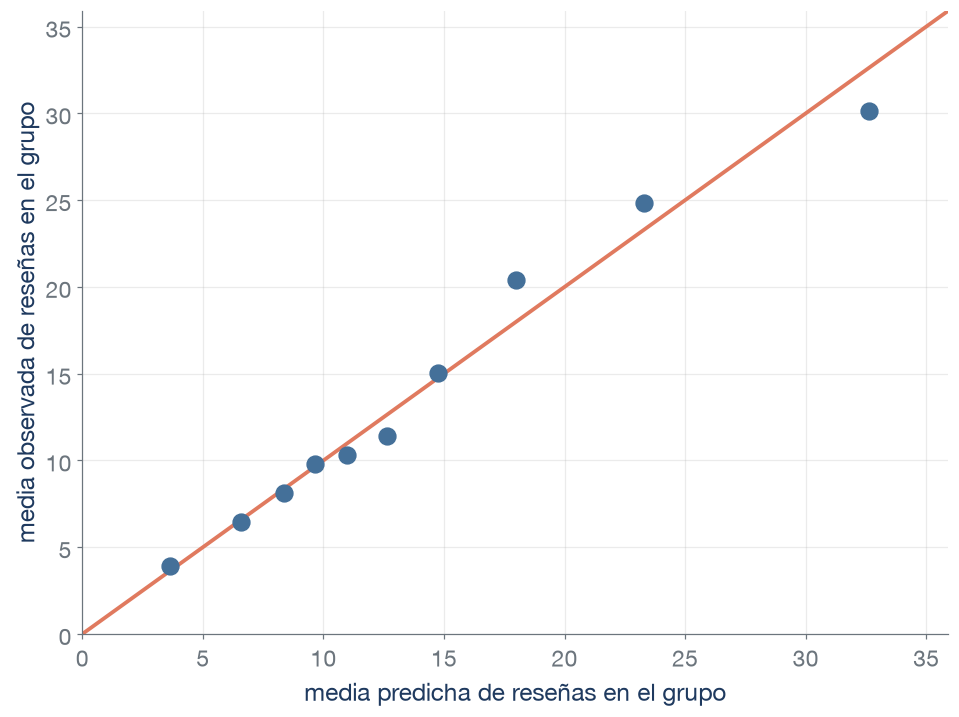
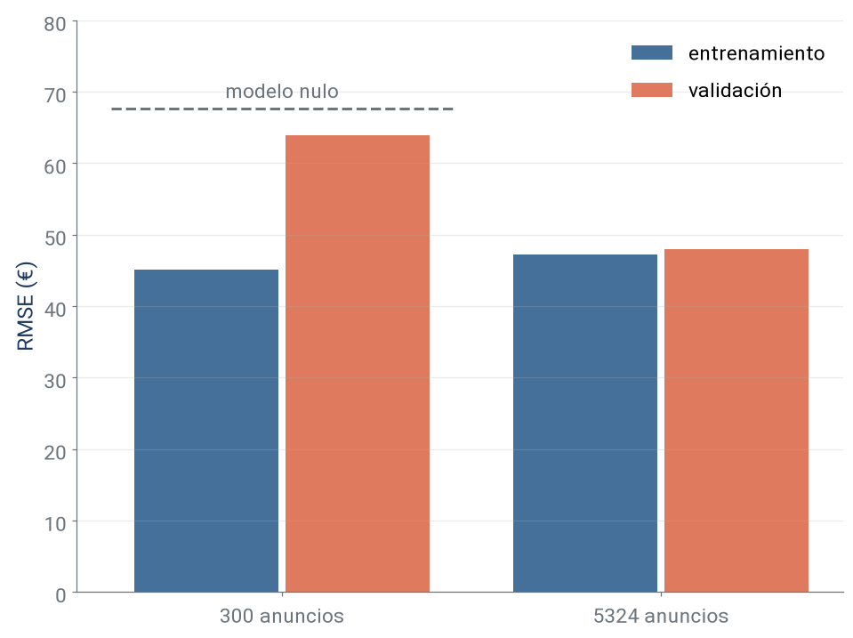
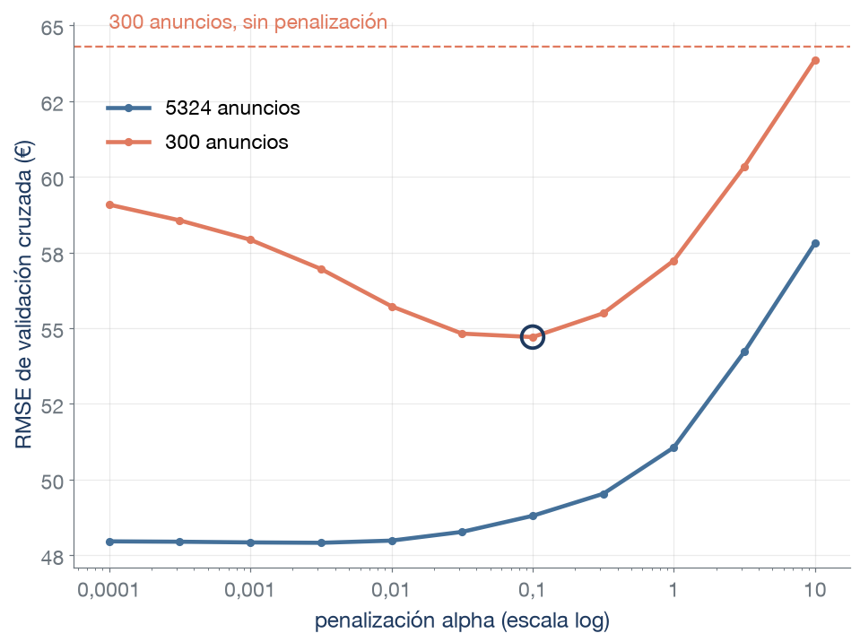
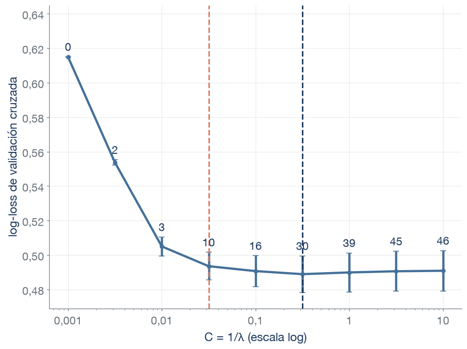
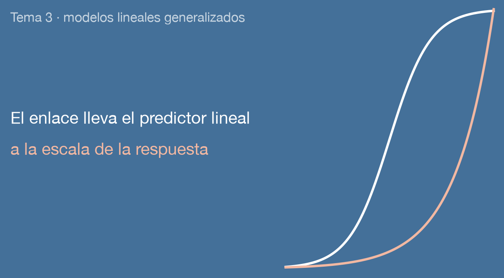

Técnicas Avanzadas de Predicción en Negocios

Para cada alojamiento anunciado:
Fuente: Inside Airbnb, Valencia (listados.csv). Misma población y división que el tema 2, con 5324 anuncios de entrenamiento. Reseñas truncadas en 100 en el gráfico.

Para una respuesta binaria \((0,1)\) estimamos \(P(\text{superanfitrión}=1 \mid X)\).
Eje vertical recortado entre −1 y 1,4: queda fuera 1 predicción de la regresión lineal.
Modelo lineal generalizado (GLM)
Verosimilitud
Probabilidad (o densidad) de los datos observados según los coeficientes \(\beta\): \[L(\beta) = \prod_{i=1}^{n} P(y_i \mid x_i;\, \beta)\]
Se trabaja con su logaritmo, la log-verosimilitud: \[\ell(\beta) = \log L(\beta)\]



Desviación típica del precio observado: 35 € en el 10 % de anuncios con menor precio predicho y 76 € en el 10 % con mayor precio predicho.

Diez grupos del mismo tamaño según las reseñas predichas por validación cruzada en el conjunto de entrenamiento. La diagonal es «media predicha = media observada».
| Respuesta | Rango | Distribución | Enlace | scikit-learn |
|---|---|---|---|---|
| Precio (regresión lineal) | número real | normal | identidad | LinearRegression |
| Superanfitrión | 0 o 1 | Bernoulli | logit | LogisticRegression |
| Tramo de precio | una de K clases | multinomial | softmax | LogisticRegression |
| Precio | positiva | Gamma | log | GammaRegressor |
| Reseñas del último año | 0, 1, 2… | Poisson | log | PoissonRegressor |
| Modelo | RMSE (€) | MAE (€) | R² |
|---|---|---|---|
| Nulo (precio medio) | 61,5 | 45,2 | 0,00 |
| Regresión lineal | 47,3 | 32,5 | 0,41 |
| MCO sobre log(precio) | 48,3 | 31,2 | 0,38 |
| GLM Gamma | 48,0 | 32,5 | 0,39 |
Medias de las 5 particiones de validación cruzada del conjunto de entrenamiento.
| Problema y modelo | log-loss | AUC | AP | Exactitud |
|---|---|---|---|---|
| Superanfitrión: nulo | 0,61 | 0,50 | 0,30 | 70 % |
| Superanfitrión: logit | 0,49 | 0,80 | 0,65 | 77 % |
| Tramo de precio: nulo | 1,10 | — | — | 34 % |
| Tramo de precio: multinomial | 0,80 | — | — | 64 % |
(—: el AUC y la AP se definen para dos clases.)
Medias de las 5 particiones de validación cruzada estratificada del conjunto de entrenamiento.

RMSE medio de las 5 particiones de validación cruzada: el de entrenamiento con los anuncios que estiman cada modelo y el de validación con la partición que queda fuera.
\[\max_{\beta}\; \ell(\beta) - \lambda \cdot \text{penalización}(\beta)\]
λ en scikit-learn
GammaRegressor y PoissonRegressor: λ se llama alpha (solo Ridge).LogisticRegression: C = 1/λ (a mayor C, menos penalización) y l1_ratio fija la mezcla (1 = Lasso).

Cada punto es el RMSE medio de las 5 particiones de validación cruzada del conjunto con el que se estima el modelo. RMSE del nulo: 67,6 € con 300 anuncios y 61,5 € con 5324.

Log-loss media de las 5 particiones de validación cruzada del conjunto de entrenamiento. Las barras son su error típico.
¿Significa que la capacidad y el barrio no están asociados con ser superanfitrión?
En parejas (4 min): ¿qué distribución, qué enlace y qué métrica usaríais para cada respuesta?
| Respuesta de la gestora | Distribución | Enlace | Métrica |
|---|---|---|---|
| ¿Cancelará el huésped la reserva? | |||
| Ingresos mensuales del anuncio (positivos) | |||
| Número de huéspedes de la próxima reserva | |||
| Canal de reserva (web, aplicación, agencia) |
| Respuesta de la gestora | Distribución | Enlace | Métrica |
|---|---|---|---|
| ¿Cancelará el huésped la reserva? | Bernoulli | logit | Pocas cancelaciones: AP o sensibilidad (log-loss si se usan las probabilidades) |
| Ingresos mensuales del anuncio (positivos) | Gamma | log | RMSE (MAE si interesa la mediana) |
| Número de huéspedes de la próxima reserva | Poisson (empieza en 1) | log | RMSE o MAE |
| Canal de reserva (web, aplicación, agencia) | multinomial | softmax | log-loss (exactitud si las clases tienen tamaños parecidos) |
| Concepto | Significado | scikit-learn |
|---|---|---|
| Modelo lineal generalizado (GLM) | Distribución de la respuesta + predictor lineal + función de enlace | sklearn.linear_model |
| Predictor lineal \(\nu_i\) | \(\beta_0 + \beta_1 x_{1i} + \dots + \beta_p x_{pi}\), que puede tomar cualquier valor real | decision_function |
| Función de enlace \(g\) | Conecta la media con el predictor lineal: \(g(\mu_i) = \nu_i\) | link en TweedieRegressor |
| Enlace identidad, log, logit, softmax | \(\mu=\nu\), \(\mu=e^\nu\), \(\mu=1/(1+e^{-\nu})\) y una probabilidad por clase que suman 1 | — |
| Verosimilitud \(L(\beta)\) | Probabilidad (o densidad) de los datos observados según los coeficientes. \(\ell(\beta) = \log L(\beta)\) | — |
| Máxima verosimilitud | Los coeficientes estimados maximizan \(\ell(\beta)\) | fit |
| Concepto | Significado | scikit-learn |
|---|---|---|
| Modelo de probabilidad lineal | Regresión lineal con respuesta 0/1 | LinearRegression |
| Bernoulli (logit) | Respuesta 0/1 que vale 1 con probabilidad \(\mu\) | LogisticRegression |
| Multinomial | Respuesta con K clases y un predictor lineal por clase | LogisticRegression |
| Gamma | Respuesta positiva, varianza proporcional a \(\mu^2\) | GammaRegressor |
| Poisson | Recuento 0, 1, 2… con media \(\mu = e^{\nu}\) | PoissonRegressor |
| Concepto | Significado | scikit-learn |
|---|---|---|
| Modelo nulo | Predice la media o la proporción de cada clase, sin predictores | DummyRegressor, DummyClassifier |
| Sobreajuste | Error de entrenamiento muy por debajo del de validación | cross_validate(..., return_train_score=True) |
| GLM con regularización | Maximiza \(\ell(\beta) - \lambda \cdot\) penalización (Ridge o Lasso) | alpha en GammaRegressor y PoissonRegressor (solo Ridge) |
C |
Inversa de la penalización en el logit: \(C = 1/\lambda\) | LogisticRegression(C=...) |
l1_ratio |
Mezcla de las penalizaciones: 0 = Ridge, 1 = Lasso | LogisticRegression(l1_ratio=...) |
| Curva de validación | Error de validación cruzada para cada valor de la penalización | GridSearchCV, LogisticRegressionCV |
| Regla del error típico | La penalización más fuerte cuyo error de validación queda a menos de un error típico del mínimo | scores_, cv_results_ |
| Concepto | Significado | scikit-learn |
|---|---|---|
| RMSE | Raíz del error cuadrático medio, en las unidades de la respuesta. Pesa más los errores grandes | scoring="neg_root_mean_squared_error" |
| MAE | Error absoluto medio, en las unidades de la respuesta. Lo minimiza la mediana | scoring="neg_mean_absolute_error" |
| R² | Proporción de la varianza de la respuesta que reproduce el modelo. El nulo da 0 | scoring="r2" |
| Log-loss | Pérdida de las probabilidades predichas. Crece con la seguridad del error | scoring="neg_log_loss" |
| Exactitud | Proporción de aciertos. Útil con clases equilibradas y errores de coste similar | scoring="accuracy" |
| AUC | Probabilidad de que un positivo elegido al azar reciba una puntuación mayor que un negativo | scoring="roc_auc" |
| AP | Precisión media al recorrer la lista ordenada por probabilidad. El nulo da la proporción de positivos | scoring="average_precision" |
